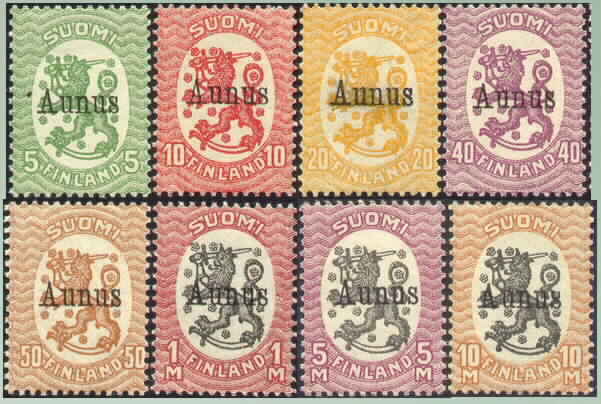

Misprint with 'S' inverted.
Return To Catalogue - Finland - Russia
Note: on my website many of the
pictures can not be seen! They are of course present in the
catalogue;
contact me if you want to purchase the catalogue.

5 p green 10 p red 20 p orange 40 p lilac 50 p brown 1 M red and black 5 M lilac and black 10 M brown and black
Misprint with 'S' inverted.
Misprints exist with the letter 'S' inverted.
Value of the stamps |
|||
vc = very common c = common * = not so common ** = uncommon |
*** = very uncommon R = rare RR = very rare RRR = extremely rare |
||
| Value | Unused | Used | Remarks |
| 5 p | ** | ** | |
| 10 p | ** | ** | |
| 20 p | ** | ** | |
| 40 p | ** | ** | |
| 50 p | RR | RR | |
| 1 M | R | R | |
| 5 M | RR | RR | |
| 10 M | RR | RR | |
Forged overprints exist, the next stamp could have such a forged overprint (the type of the overprint differs from the above ones):

Many forged overprint are extremely hard to detect. Inverted overprints are always forged.